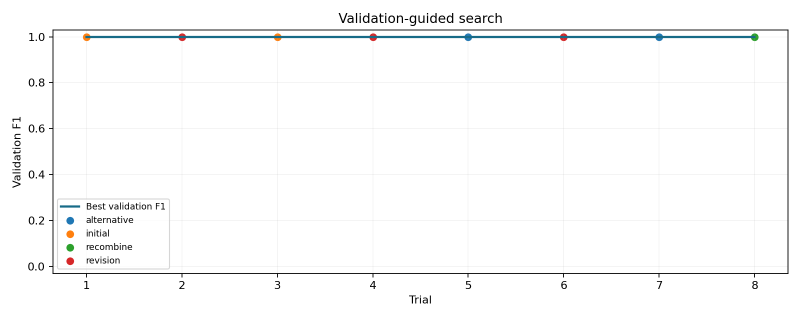

{
"complete": true,
"best_trial": 0,
"validation_f1": 1.0,
"trials": 8,
"valid_trials": 8,
"trial_success_rate": 1.0,
"first_attempt_success_rate": 1.0,
"mock": true
}
{
"aggregate": {
"f1": 1.0,
"precision": 1.0,
"recall": 1.0,
"hausdorff_infinite": false,
"hausdorff": 0.0,
"n_sequences": 2
},
"per_series": [
{
"name": "mean_variance_0",
"f1": 1.0,
"precision": 1.0,
"recall": 1.0,
"hausdorff": 0.0,
"hausdorff_infinite": false,
"tp": 2,
"fp": 0,
"fn": 0,
"matches": [
[
100,
100
],
[
200,
200
]
]
},
{
"name": "mean_variance_1",
"f1": 1.0,
"precision": 1.0,
"recall": 1.0,
"hausdorff": 0.0,
"hausdorff_infinite": false,
"tp": 2,
"fp": 0,
"fn": 0,
"matches": [
[
100,
100
],
[
200,
200
]
]
}
]
}{
"reported_cost_usd": 0,
"mode": "no API calls"
}| Trial | Operator | Model | F1 | Accepted | Stagnant | Parents |
|---|---|---|---|---|---|---|
| 0 | initial | pelt | 1.0 | True | False | [] |
| 1 | revision | pelt | 1.0 | False | True | [0] |
| 2 | initial | bottom_up | 1.0 | False | False | [] |
| 3 | revision | bottom_up | 1.0 | False | True | [2] |
| 4 | alternative | window | 1.0 | False | False | [0, 1] |
| 5 | revision | pelt | 1.0 | False | True | [0] |
| 6 | alternative | window | 1.0 | False | False | [0, 5] |
| 7 | recombine | ensemble | 1.0 | False | False | [0, 1] |
Scores are computed outside candidate execution. Primary selection uses validation F1 only. Training and test annotation access is excluded from the planner.